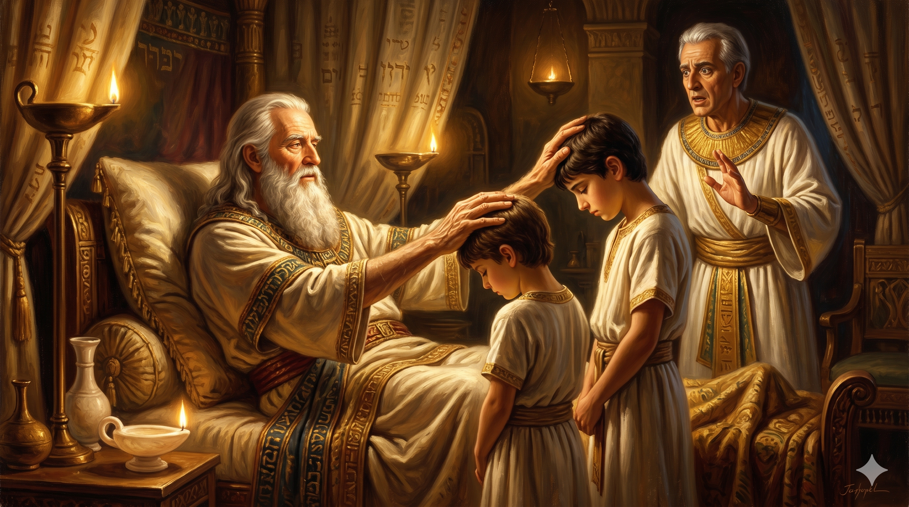
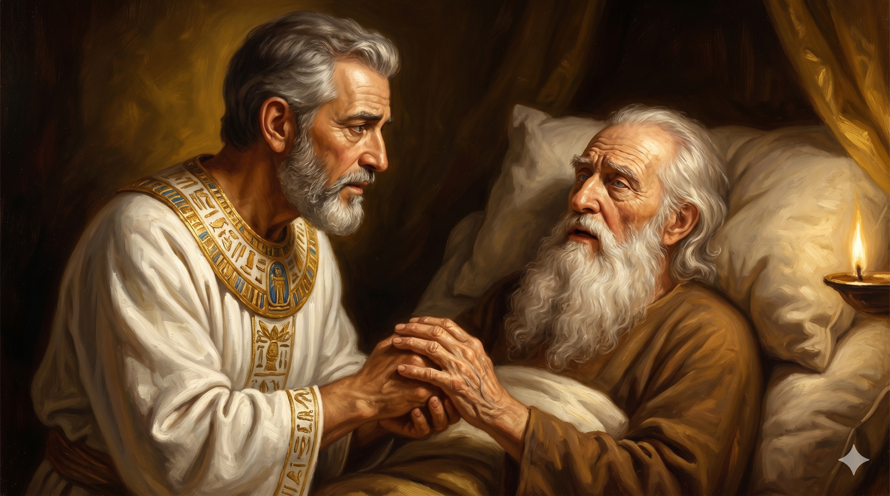

백사십칠 세 야곱이 침상 위에 일어나 앉아, 두 손을 엑스(X) 자로 엇바꾸어 동생 에브라임의 머리에는 오른손을, 형 므낫세의 머리에는 왼손을 얹는 거룩한 축복의 순간. 침상 머리맡에는 늙은 요셉이 두 아들을 두 무릎 사이에 세우고 아버지의 떨리는 손을 바라본다.
이스라엘이 오른손을 펴서 차남 에브라임의 머리에 얹고 왼손을 펴서 므낫세의 머리에 얹으니 므낫세는 장자라도 팔을 어긋맞겨 얹었더라 그가 요셉을 위하여 축복하여 이르되 내 조부 아브라함과 아버지 이삭이 섬기던 하나님, 나의 출생으로부터 지금까지 나를 기르신 하나님, 나를 모든 환난에서 건지신 여호와의 사자께서 이 아이들에게 복을 주시오며 이들로 내 이름과 내 조상 아브라함과 이삭의 이름으로 칭하게 하시오며 이들이 세상에서 번식되게 하시기를 원하나이다 — 창세기 48:14–16
야곱이 병들어 누웠다는 소식을 듣고 요셉이 두 아들 므낫세와 에브라임을 데리고 아버지의 침상으로 옵니다. 늙은 야곱은 가슴 깊은 곳에서 옛 기억을 끌어올립니다. "전능하신 하나님이 가나안 땅 루스에서 내게 나타나사 복을 주셨다." 그리고 그는 한 가지 놀라운 결정을 선언합니다 — "네 두 아들 에브라임과 므낫세는 이제 내 것이라. 르우벤과 시므온처럼 내 아들이 될 것이다." 손자를 자기 아들의 자리로 끌어올린 이 한 마디는, 요셉에게 두 몫의 기업을 주는 동시에 이스라엘 열두 지파의 명단에 에브라임과 므낫세를 새기는 거룩한 결정이었습니다. 평생 자기 아버지에게서 형의 자리를 빼앗아 온 야곱이, 이제는 자기가 직접 형제의 자리를 만들어 주는 사람으로 바뀌어 있습니다.
그리고 가장 인상적인 장면이 따릅니다. 요셉은 정성껏 두 아들을 세웠습니다 — 장자 므낫세는 야곱의 오른편에, 차남 에브라임은 야곱의 왼편에. 그러나 야곱은 떨리는 두 손을 엑스(X) 자로 엇바꾸어, 오른손을 동생 에브라임의 머리에, 왼손을 형 므낫세의 머리에 얹습니다. 요셉이 놀라 그 손을 바로잡으려 하자, 야곱은 단호히 말합니다. "내가 안다. 내 아들아, 내가 안다. 그도 한 백성이 되며 그도 크게 되려니와, 그의 아우가 그보다 크게 되고 그의 자손이 여러 민족을 이루리라." 늙은 야곱의 흐릿한 눈은 에브라임과 므낫세를 분간하지 못했지만, 그 영의 눈은 수백 년 후의 역사를 정확히 꿰뚫어 보고 있었습니다. 인간의 순서가 아니라 하나님의 주권적 선택을 따라 손을 얹은 야곱 — 한때는 자기 손으로 장자권을 빼앗던 그 사람이, 이제는 하나님의 뜻을 따라 두 손을 엇바꾸어 다음 세대에 그 자유를 흘려보내는 사람이 되었습니다.

요셉의 놀란 손이 아버지 야곱의 오른손을 잡고 형 므낫세 쪽으로 옮기려는 그 찰나, 야곱의 깊고 평온한 눈빛이 요셉을 마주 바라보며 "내가 안다, 내 아들아"라고 말하는 거룩한 침묵의 순간.
우리는 평생 "순서"에 갇혀 살아갑니다. 첫째여서 받아야 할 복, 둘째여서 양보해야 할 자리, 어른이라서 가져야 할 권위, 후배라서 기다려야 할 차례 — 그러나 하나님 나라의 축복은 이런 인간의 순서를 자주 뛰어넘습니다. 다윗은 이새의 막내였고, 솔로몬은 후궁의 아들이었고, 베드로는 학력 없는 어부였습니다. 하나님은 사람의 잣대로 줄을 세우지 않으십니다. 만약 당신이 "내 차례가 아닐 것 같다"는 자리에서 좌절하고 있다면, 야곱이 엇바꾼 두 손을 기억하십시오. 하나님은 당신이 줄의 어디에 서 있는지가 아니라, 당신의 머리 위에 어느 손이 얹혔는지를 보십니다. 동시에, 당신이 만약 "내가 첫째니까 당연하다"는 마음으로 살고 있다면 — 야곱의 손이 어느 머리에 얹혔는지를 보십시오. 모든 자리는 하나님의 자유에 속해 있고, 우리는 그 앞에서 겸손해야 합니다.
또한 이 장면은 부모와 어른의 마지막 사명을 보여 줍니다. 야곱이 마지막 침상에서 한 일은 재산을 분배하는 일이 아니라 — 손자들의 머리에 손을 얹는 일이었습니다. 다음 세대에게 가장 귀한 유산은 통장의 숫자가 아니라 "축복의 손"입니다. 이스라엘 백성들은 오늘날까지도 안식일 저녁마다 자녀의 머리에 손을 얹고 이렇게 축복합니다 — "하나님께서 너를 에브라임과 므낫세 같이 되게 하시기를 원하노라." 야곱이 이 두 아이의 머리에 얹은 손이, 사천 년이 흐른 지금까지 한 민족의 가정마다 매주 다시 얹히고 있는 것입니다. 오늘 밤 당신의 자녀, 당신의 손자, 당신의 후배의 머리 위에 한 번 손을 얹고 짧게라도 축복해 주십시오. 그 한 번의 손이 그 사람의 평생을 따라가는 거룩한 흔적이 됩니다.
하나님의 축복은 사람이 정한 순서를 자주 엇바꿉니다.
줄의 어디에 서 있는지가 아니라, 어느 손이 당신의 머리 위에 얹혔는지가 운명을 결정합니다.
오늘 밤 한 사람의 머리에 손을 얹고 짧은 한 마디로 축복해 보십시오 — 사천 년을 가는 손이 됩니다.